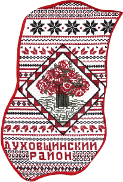

Смоленский
Областной центр народного творчества
Наш центр возрождает и развивает традиционную культуру Смоленщины


Починковский район
Починковский район расположен в юго-западной части Смоленской области, входящей в состав Центрального экономического района нечернозёмной зоны России.
Починковский район2
Починковский район2 расположен в юго-западной части Смоленской области, входящей в состав Центрального экономического района нечернозёмной зоны России.
Починковский район3
Починковский район3 расположен в юго-западной части Смоленской области, входящей в состав Центрального экономического района нечернозёмной зоны России.
Починковский район4
Починковский район4 расположен в юго-западной части Смоленской области, входящей в состав Центрального экономического района нечернозёмной зоны России.
Починковский район5
Починковский район5 расположен в юго-западной части Смоленской области, входящей в состав Центрального экономического района нечернозёмной зоны России.
Починковский район6
Починковский район6 расположен в юго-западной части Смоленской области, входящей в состав Центрального экономического района нечернозёмной зоны России.
Починковский район7
Починковский район7 расположен в юго-западной части Смоленской области, входящей в состав Центрального экономического района нечернозёмной зоны России.
Починковский район8
Починковский район8 расположен в юго-западной части Смоленской области, входящей в состав Центрального экономического района нечернозёмной зоны России.
Починковский район9
Починковский район9 расположен в юго-западной части Смоленской области, входящей в состав Центрального экономического района нечернозёмной зоны России.
Починковский район10
Починковский район10 расположен в юго-западной части Смоленской области, входящей в состав Центрального экономического района нечернозёмной зоны России.
Починковский район11
Починковский район11 расположен в юго-западной части Смоленской области, входящей в состав Центрального экономического района нечернозёмной зоны России.
Починковский район12
Починковский район12 расположен в юго-западной части Смоленской области, входящей в состав Центрального экономического района нечернозёмной зоны России.
Починковский район13
Починковский район13 расположен в юго-западной части Смоленской области, входящей в состав Центрального экономического района нечернозёмной зоны России.
Починковский район14
Починковский район14 расположен в юго-западной части Смоленской области, входящей в состав Центрального экономического района нечернозёмной зоны России.
Починковский район15
Починковский район15 расположен в юго-западной части Смоленской области, входящей в состав Центрального экономического района нечернозёмной зоны России.
Починковский район16
Починковский район16 расположен в юго-западной части Смоленской области, входящей в состав Центрального экономического района нечернозёмной зоны России.
Починковский район17
Починковский район17 расположен в юго-западной части Смоленской области, входящей в состав Центрального экономического района нечернозёмной зоны России.
Починковский район18
Починковский район18 расположен в юго-западной части Смоленской области, входящей в состав Центрального экономического района нечернозёмной зоны России.
Починковский район19
Починковский район19 расположен в юго-западной части Смоленской области, входящей в состав Центрального экономического района нечернозёмной зоны России.
Починковский район20
Починковский район20 расположен в юго-западной части Смоленской области, входящей в состав Центрального экономического района нечернозёмной зоны России.
Починковский район21
Починковский район21 расположен в юго-западной части Смоленской области, входящей в состав Центрального экономического района нечернозёмной зоны России.
Починковский район22
Починковский район22 расположен в юго-западной части Смоленской области, входящей в состав Центрального экономического района нечернозёмной зоны России.
Починковский район23
Починковский район23 расположен в юго-западной части Смоленской области, входящей в состав Центрального экономического района нечернозёмной зоны России.
Починковский район24
Починковский район24 расположен в юго-западной части Смоленской области, входящей в состав Центрального экономического района нечернозёмной зоны России.
Починковский район25
Починковский район25 расположен в юго-западной части Смоленской области, входящей в состав Центрального экономического района нечернозёмной зоны России.
Последние новости
19 Сентября 2023
Всероссийский форум по вопросам деятельности в сфере нематериального этнокультурного достояния
Песенная традиция деревни Нижние Луги Демидовского района Смоленской
18 Сентября 2023

Песенная традиция деревни Нижние Луги Демидовского района Смоленской
18 Сентября 2023

Песенная традиция деревни Нижние Луги Демидовского района Смоленской
18 Сентября 2023

Песенная традиция деревни Нижние Луги Демидовского района Смоленской
18 Сентября 2023


Последние фотоотчеты
Выбрать район:
Велижский район
Вяземский район
Гагаринский район
Глинковский район
Демидовский район
Дорогобужский район
Духовщинский район

217 фото
Фотоотчет с концерта ансамбля “Лейся Песня”
217 фото
Фотоотчет с концерта ансамбля “Лейся Песня”
2
3
4
5
6
7
Недавно добавленные КДУ
Выбрать район:
Велижский район
Вяземский район
Гагаринский район
Глинковский район
Демидовский район
Дорогобужский район


2
3
4
5
6